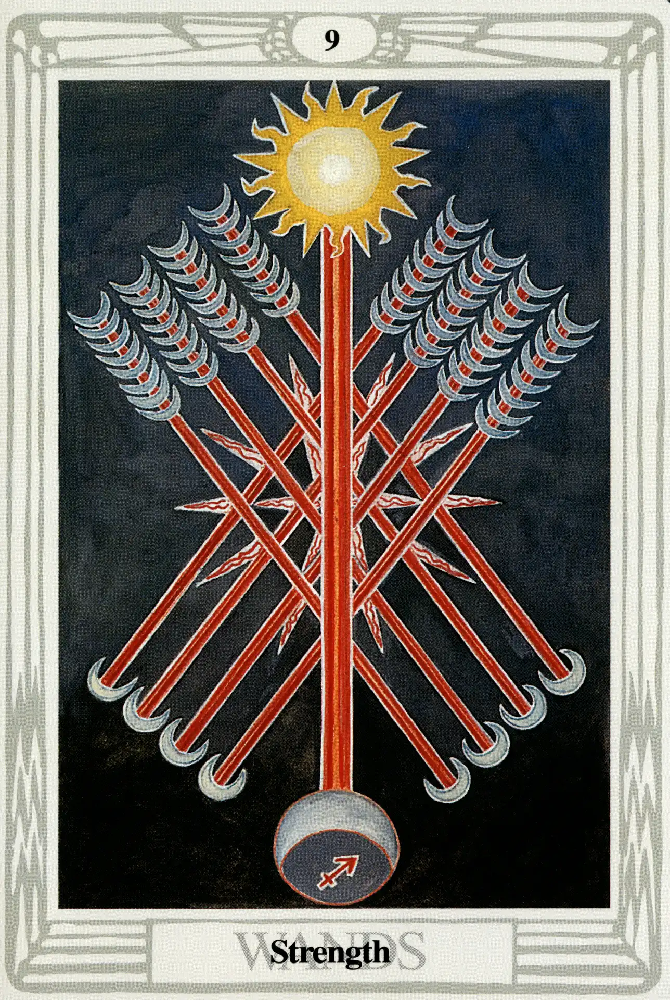

Wands
Nine of Wands
Strength

(Moon in Sagittarius)
10° to 20° Sagittarius
December 3 to December 12
Original Title: Lord of Great Strength.
Golden Dawn Model: Four hands (two from each side of the card) appear from clouds; clasped in two pairs in the center with the grip of the First Order. They hold eight wands, crossed four over four. A fifth hand appears from the bottom center of the card holding a ninth wand upright, which crosses the point of junction with the others. Flames flash where wands meet.
King Scale for Yesod: Indigo.
The Four Scales for Moon: Blue; Silver; Cold Pale Blue; Silver, rayed Violet.
The Four Scales for Sagittarius: Blue; Yellow; Green; Dark vivid Blue.
Formula: 9 (Yesod) of Wands (Atziluth) + Moon in Sagittarius = STRENGTH
Holding very close to the Golden Dawn description and color scales, the Nine of Wands tells its story in almost quiet simplicity. Eight of the wands are arrows, each of which has a crescent Moon as the head and eight Moons for feathers. The great central wand, with the Sun at its top and the Moon at its bottom, represents the path of Sagittarius on the Tree of Life, which joins Tiphareth (Sun) to Yesod (Moon). “Here the Moon,” Crowley writes, “the weakest of the planets, is in Sagittarius, the most elusive of the Signs; yet it dares call itself Strength”
The source of this confident strength is the card's position in Yesod on the Tree of Life. Not only is Yesod the natural sephira of the Moon (making our Moon here very comfortable—even if it is in Sagittarius), it is also the Foundation, the “seat of the great crystallization of Energy.” As Crowley observes, “The Nine represents always the fullest development of the Force in its relation with the Forces above it.”
This card indicates great strength, but its strength lies in its ability to change perpetually. Crowley gave what is perhaps the simplest meaning of this card when he wrote: “Defense, to be effective, must be mobile.”